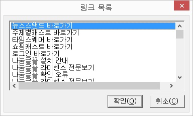
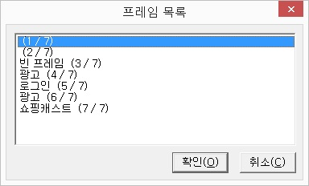

Ⅹ-2 가상커서 탭키 기능
Ⅹ-2-1. 개요
가상커서 탭키란 센스리더 3.2.2.0까지 사용되던 기능으로 현재는 기본값으로 브라우저 탭키가 사용됩니다.
변경된 브라우저 탭키에 대한 학습이 어려우신 기존 사용자분은 인터넷 창에서 "Ctrl-Shift-F9"키를 눌러 설정대화상자를 호출 후 방향키로 "가상커서 탭키 사용"에서 <enter>키를 눌러 기존 방식을 이용하실 수 있습니다.
Ⅹ-2-2. 내용 읽기 기능
가상커서에서 제공하는 내용 읽기 기능을 사용해 현재 웹페이지를 글자단위, 단어단위, 줄단위로 읽을 수 있습니다. 가상커서를 이용해 웹페이지를 읽을 때는 기본적으로 위/아래 방향키를 활용하며, 각종 이동 기능을 이용할 경우 더욱 효율적으로 활용할 수 있습니다.
1. 이전 글자로 <왼쪽 방향키>
현재 가상 커서 위치의 이전 글자를 읽고 가상 커서를 이전 글자로 이동합니다.
2. 현재 글자 읽기 <Ctrl - Shift - ,(쉼표)>
현재 가상커서가 위치한 글자를 읽습니다. 캐럿의 현재 글자 읽기와 동일하게 동작합니다.
3. 다음 글자로 <오른쪽 방향키>
현재 가상 커서의 다음 글자를 읽고 가상 커서를 이동 합니다.
4. 이전 단어로 <Ctrl - 왼쪽 방향키>
현재 가상커서 위치의 이전 단어를 읽고 가상 커서를 해당 위치로 이동합니다.
5. 현재 단어 읽기 <Ctrl - Shift - K>
현재 가상커서가 위차한 단어를 읽습니다. 캐럿의 현재 단어 읽기 기능과 동일하게 동작합니다.
6. 다음 단어로 <Ctrl - 오른쪽 방향키>
현재 가상 커서의 다음 단어를 읽고 가상 커서를 이동합니다.
7. 이전 줄로 <위쪽 방향키>
현재 가상 커서의 윗줄을 읽고 가상커서를 이동합니다.
8. 현재 줄 읽기 <Ctrl-Shift-I>
현재 가상커서가 위치한 줄을 읽습니다. 캐럿 현재 줄 읽기와 동일합니다.
9. 다음 줄로 <아래 방향키>
가상 커서의 다음 줄을 읽고 가상 커서를 이동합니다.
10. 줄 처음으로 <Home>
현재 가상커서가 위치한 줄의 처음 글자로 이동하고 처음 글자를 읽습니다.
11. 줄 끝으로 <End>
현재 가상 커서가 위치한 줄의 끝 글자로 이동하고 해당 글자를 읽습니다.
12. 이전 25줄 이동 <Page up>
현재 가상 커서 위치의 25줄 이전으로 이동하고 해당 줄을 읽습니다.
13. 다음 25줄 이동 <Page down>
현재 가상 커서 위치의 25줄 다음으로 이동하고 해당 줄을 읽습니다.
14. 현재 페이지 처음으로 <Ctrl - Home>
현재 열려 있는 웹페이지의 처음으로 가상커서를 이동합니다.
15. 현재 페이지 끝으로 <Ctrl - End>
현재 열려 있는 웹페이지의 끝으로 가상커서를 이동합니다.
Ⅹ-2-3. 이동 기능
가상커서에서는 방대한 항목으로 구성된 웹페이지를 효율적으로 이용하기 위해 다음과 같은 이동 기능을 제공합니다. 이동 기능을 활용하면 원하는 항목으로 빠르게 이동할 수 있습니다.
1. 객체 이동 <Tab>, <Shift-Tab>
현재 가상커서 위치의 다음, 이전 객체로 이동합니다. 객체의 종류에는 링크, 버튼, 콤보상자, 편집창 등이 있습니다.
2. 프레임 이동 <Ctrl-Tab>, <Ctrl-Shift-Tab>
현재 가상커서 위치의 다음, 이전 프레임으로 이동합니다.
3. 폼 컨트롤 이동 <Ctrl-F2>, <Ctrl-Shift-F2>
현재 가상커서 위치의 다음, 이전 폼 컨트롤로 이동합니다. 폼 컨트롤에는 편집창, 버튼, 체크상자 등이 포함됩니다.
4. 테이블 간 이동 <Ctrl-F3>, <Ctrl-Shift-F3>
현재 가상커서 의치의 다음, 이전 테이블로 이동합니다.
5. 텍스트 간 이동 <Ctrl-F4>, <Ctrl-Shift-F4>
현재 가상커서 위치의 다음, 이전 텍스트로 이동합니다. (2글자 이상의 목록항목도 포함)
6. 헤딩 간 이동 <Ctrl-F6>, <Ctrl-Shift-F6>
현재 가상커서 위치의 다음, 이전 헤딩으로 이동합니다. 기능키를 지정하여 세부적인 헤딩 이동도 가능합니다.
※ 센스리더 v5.3 이상은 브라우저 탭키와 같이 <Insert + 1 ~ 6>, <Insert + Shift + 6 ~ 6>키를 이용한 헤딩 레벨단위 이동이 가능 합니다.
7. 외부 객체 이동 <Ctrl-F7>, <Ctrl-Shift-F7>
현재 페이지 내의 다음, 이전 외부 객체로 이동합니다. 외부 객체는 플래시, 플렉스, 실버라이트, 미디어컨트롤 등을 포함합니다.
8. 편집창 이동 <Ctrl-F8>, <Ctrl-Shift-F8>
현재 가상커서 위치의 다음, 이전 편집창으로 이동합니다. 이동 가능한 편집창의 종류는 편집창, 멀티라인 편집창, 입력 가능 프레임 등이 포함됩니다.
9. 링크 이동 <Ctrl-'(어포스트로피)>, <Ctrl-Shift-'(어포스트로피)>
현재 가상커서 위치의 다음, 이전 링크로 이동합니다.
10. 방문한 링크 이동 <Ctrl-;>, <Ctrl-Shift-;>
현재 가상커서 위치의 다음, 이전의 방문한 링크로 이동합니다.
11. 윈도우 이동 <Ctrl-Pageup>, <Ctrl-Pagedown>
현재 열려있는 윈도우의 이전, 다음 윈도우로 이동합니다. 윈도우의 기본 도움말이나 익스플로러에서 미디어가 활성화되어 있는 경우 여러 개의 윈도우가 열리는데 윈도우 이동 기능을 사용하여 문서 내용을 확인할 수 있습니다.
12. 폼 이동
컨트롤 배치를 위해 사용된 다음, 이전 폼으로 이동합니다.
13. 필드셋 이동
현재 페이지의 다음, 이전 필드셋으로 이동합니다.
14. 목록 이동 <Ctrl-I>, <Ctrl-K>
현재 가상커서 위치의 이전, 다음 목록으로 이동합니다.
15. 이미지 단위 이동 <Insert-.(마침표)>, <Shift-SRD-.(점)>
현재 가상커서 위치의 이전, 다음 이미지로 이동합니다.
16. 본문 영역 읽기/해제 <Ctrl-z>, <Ctrl-U>
웹 페이지에서 본문 내용을 안정적으로 확인할 수 있는 방법으로써, '본문 영역 읽기 모드' 상태에서는 가상커서의 포인터가 본문 영역을 벗어나지 않습니다.
또한 기존 '테이블 모드 해제'의 기능키와 동일하게 본문 내용 읽기 모드 해제가 가능합니다.
Ⅹ-2-4. 테이블 이동/읽기 기능
가상커서의 기본적인 탐색 방법으로는 테이블의 구조를 이해하기가 어렵습니다. 가상커서는 복잡한 테이블을 쉽게 읽을 수 있도록 다음과 같은 테이블 이동/읽기 기능을 지원합니다.
이동 기능은 실제 가상커서의 셀단위로 이동되며, 읽기 기능은 가상커서는 움직이지 않고 관련된 셀만 읽어줍니다.
테이블에 summary 속성이 있는 경우 ‘테이블 설명’으로 음성이 출력되고, caption 속성은 ‘테이블 제목’으로 음성이 출력됩니다. 또한, 제목 셀(TH, SCOPE) 태그가 사용된 경우 셀 이동시 셀 제목과 내용을 함께 읽어줍니다.
* 가상커서는 행이나 열의 갯수가 1인 경우 정상적인 테이블이 아니고 레이아웃을 위한 테이블로 간주하여 테이블 표시에서 제외합니다.
1. 테이블 행 이동 <Ctrl-Alt-위/아래 방향키>
테이블의 현재 셀에서 위, 아래 셀로 이동합니다.
2. 테이블 열 이동 <Ctrl-Alt-왼쪽/오른쪽 방향키>
테이블의 현재 셀에서 왼쪽, 오른쪽 셀로 이동합니다.
3. 현재 행 첫 열, 마지막 열로 이동 <Ctrl-Alt-Home/End>
테이블의 현재 행 처음 열, 마지막 열로 이동합니다.4. 현재 열 첫 행, 마지막 행으로 이동 <Ctrl-Alt-Pageup/PageDown>
테이블의 현재 열 처음 행, 마지막 행으로 이동합니다.
5. 테이블 위, 아래 셀 읽기 <Ctrl-Alt-Shift-위/아래 방향키>
현재 셀 위치의 위, 아래 셀을 읽어줍니다.
6. 테이블 왼쪽, 오른쪽 셀 읽기 <Ctrl-Alt-Shift-왼쪽/오른쪽 방향키>
현재 셀의 왼쪽, 오른쪽 셀을 읽어줍니다.
7. 현재 행 첫 열, 마지막 열 읽기 <Ctrl-Alt-Shift-Home/End>
현재 행의 처음 열, 마지막 열을 읽어줍니다.
8. 현재 열 첫 행, 마지막 행 읽기 <Ctrl-Alt-Shift-PageUp/PageDown>
현재 열의 처음 행, 마지막 행을 읽어줍니다.
9. 표 정보 읽기 <Ctrl-Alt-Enter>
현재 위치한 표의 전체 행/열 정보와 현재 셀의 위치 정보를 알려줍니다.
10. 테이블 모드 선택/해제 <Ctrl-T>, <Ctrl-U>
테이블 모드란 테이블을 안정적으로 확인할 수 있는 방법으로써, 테이블 모드 상태에서는 가상커서의 포인터가 테이블을 벗어나지 않습니다.
Ⅹ-2-5. 목록 기능
목록 기능은 가상커서에서 링크와 프레임, 이미지를 목록으로 구성해 표시함으로써 사용자의 편리성을 높인 기능입니다.
1. 링크 목록 <Ctrl + L>
현재 페이지의 링크를 추출해서 목록으로 보여줍니다. 원하는 목록에서 엔터키를 누르면 해당 링크가 열립니다.

2. 프레임 목록 <Alt + Shift + W>
현재 페이지의 프레임을 추출해서 목록으로 보여줍니다. 원하는 프레임 목록에서 엔터키를 누르면 해당 프레임으로 가상커서가 이동됩니다.

3. 이미지 목록 <Insert-/(슬래시)>
현재 페이지의 이미지나 그래픽 링크에 대한 목록을 호출 합니다. 이미지 목록 중 원하는 항목에 포커스한 후 탭키를 이용하여 해당 이미지로의 이동, 레이블 삭제등을 할 수 있습니다.
또한 센스리더 더 넥스트의 경우 '컨트롤 정보 읽기'를 통해 이미지에 대한 문자 인식을 진행할 수 있습니다.
Ⅹ-2-6. 찾기 기능
가상커서에서는 웹페이지의 내용을 효율적으로 탐색할 수 있도록 찾기 기능을 제공합니다. 아래의 찾기 기능을 이용하면 문서의 내용을 보다 빠르게 탐색할 수 있습니다.

1. 문자열 찾기 <Ctrl-F>
일반 문서 편집기와 마찬가지로 가상커서 내의 문자열을 검색하는 기능입니다. 현재 가상커서가 위치한 줄부터 찾기를 실행합니다. 찾기 방향과 대, 소문자의 구별 여부를 사용자가 선택할 수 있습니다.
또한 자주 사용하는 문자를 URL별로 10개씩 저장하여 단축키를 이용한 빠른 탐색이 가능 합니다.
문자값을 등록하기 위해서는 '문자열 찾기 대화상자'에 단어를 입력하고 <Alt + R>를 눌러 바로 등록할 수 있습니다.
다른 단축지점에 저장을 원하시는 경우 문자값을 입력 후, 'Tab'키로 목록 상자로 이동합니다.
상, 하키를 이용하여 원하는 단축지점에서 <Alt + R>를 누르거나 'Tab'키로 '등록'버튼으로 이동 후 엔터를 눌러 저장할 수 있습니다.
만약 등록한 내용을 삭제하고자 하는 경우 목록 상자에서 삭제하고자 하는 문자값에 포커스한 후, <Alt + D>를 누르거나 'Tab'키로 '삭제'버튼으로 이동하여 엔터를 눌러 삭제할 수 있습니다.
2. 다시 찾기 <F3>
이전에 사용했던 찾기 방법을 그대로 적용하여 다음 결과 값을 찾아 이동합니다.
3. 반대로 찾기 <Shift-F3>
다시 찾기를 반대방향으로 실행합니다.
4. 등록한 문자값으로 이동 <Insert + 7 ~ -(대시)>
등록한 문자값의 단축키는 5개가 지정되어 있으며, 7, 8, 9, 0, -(대시)로 구성되어 있습니다.
만약 5개의 기능키를 추가로 등록하고자 하는 경우 '가상커서 설정 대화상자'의 '키설정' 항목에서 직접 추가할 수 있습니다.
5. 등록한 문자값의 반대 방향으로 이동 <Insert + Shift + 7 ~ -(대시)>
단축키로 이동한 결과의 반대 방향으로 이동합니다.
6. 이전 링크 문자열 찾기 <Ctrl-`(그레이브>
이전에 진입한 링크의 텍스트로 문자열 찾기를 실행합니다. 게시판이나 신문기사를 읽을 때 사용하면 유용합니다.
7. 이전 링크 문자열 뒤로 찾기 <Ctrl-Shift-`(그레이브>
이전 링크 문자열 찾기를 반대방향으로 실행합니다.
Ⅹ-2-7. 블럭 기능
가상커서에서는 다음과 같은 블럭 기능을 제공합니다.
1. 전체 선택 <Ctrl-A>
현재 열려진 페이지의 모든 내용을 선택합니다.
전체 선택 이후 가상커서 포커스는 문서의 마지막으로 이동합니다.
2. 블럭지정 <Alt-L>
블럭 지정을 원하는 처음 위치의 글자로 이동 후 <Alt-L>키를 누르고 마지막 글자까지 이동해서 다시 <Alt-L>키를 누르면 그 만큼의 내용이 블럭으로 선택됩니다. 이렇게 블럭을 지정한 상태에서는 다른 곳으로 이동해도 블럭이 해제되지 않습니다.
{{3. 블럭지정 <Shift-방향키>}}
윈도우의 기본키인 <Shift-방향키>로 블럭을 설정합니다.
이방법으로 블럭 설정을 한 후 다른 곳으로 이동하면 블럭이 해제됩니다.
{{4. 복사 <Ctrl-C>}}
현재 블럭으로 선택된 내용을 복사하며 이전 클립보드의 내용은 모두 사라집니다.
{{5. 이어 붙이기 <Ctrl-R>}}
현재 블럭으로 선택된 내용을 클립보드에 추가합니다. 이 기능은 클립보드의 이전 내용을 그대로 보전한다는 점이 복사<Ctrl-C>와 다릅니다.
Ⅹ-2-8. 행동 기능
웹페이지 내의 폼필드에 대해 다음의 행동을 적용합니다.
1. <Enter>
1) 링크나 버튼에 포커스되었을 때는 해당 링크나 버튼을 실행합니다.
2) 그외의 객체에서는 가상커서를 해제합니다. 멀티라인 편집창의 경우 반드시 가상커서를 해제해야 입력 내용을 정확히 확인할 수 있습니다.
2. <Ctrl-Shift-Enter>
링크 진입 후 링크의 문자열로 찾아가서 연속읽기를 실행합니다. <Enter> 기능과 <Ctrl-`>과 <F11> 기능을 한꺼번에 수행하는 기능이라고 생각하시면 됩니다. 게시물이나 신문 기사 읽기시 유용한 기능입니다.
3. <Space>
1) 객체의 경우 해당 객체에 포커스를 이동 시킵니다.
2) 채크박스에서는 선택과 해제를 토글합니다.
3) 라디오버튼의 경우 해당 라디오 버튼을 선택합니다.
4) 이미지에서는 그 이미지의 가운데로 마우스 포인터를 이동합니다.
4. <Alt-위/아래 방향키>
콤보상자나 리스트박스에서 항목간을 위, 아래로 이동합니다. 항목을 선택하려면 <Alt-Enter>키를 눌러야 합니다. 익스플로러상의 실제 포커스가 이동되는 기능은 아니고 해당항목을 음성으로만 출력하고 <Alt-Enter>를 눌렀을때 선택됩니다.5. <Alt-Enter>
1) 콤보상자나 리스트박스에서 이동 중인 항목을 선택합니다.
2) 키보드로 실행되지 않는 항목을 마우스로 클릭합니다.
6. <Ctrl-위/아래 방향키>
콤보상자나 리스트박스에서 항목 간을 위, 아래로 이동합니다. 화면상의 포커스가 같이 이동하기 때문에 별도로 선택할 필요는 없습니다. 해당 항목에 링크가 되어있는 경우 바로 이동하기 때문에 사용에 주의가 필요하며 그런 경우엔 <Alt-위/아래 방향키>를 사용하는 것이 좋습니다.
7. <Ctrl-Del>
편집창의 내용을 지웁니다.
Ⅹ-2-9. 마크 기능
마크 기능은 자주 방문하는 페이지의 특정 라인을 기억시켜 두는 기능입니다. 이 기능은 웹페이지 단위로 정보가 저장되며, 라인의 번호를 기억하기 때문에 웹페이지가 갱신되어 라인수가 달라지게 되면 마크 위치가 변할 수 있습니다.
마크 기능은 마크 지정과 저장으로 구분됩니다. 마크 지정은 특정 라인을 임시로 기억하는 것으로 익스플로러를 종료하면 마크가 사라집니다. 이에 비해 마크 저장은 마크 정보를 파일로 보관하게 되어 사용자가 삭제하기 전까지 마크 정보를 유지하게 됩니다.
1. 마크 지정/저장 <Ctrl-M>
1) 마크가 없는 라인의 경우 마크를 지정합니다.
2) 마크가 지정된 라인에서는 마크를 저장합니다.
예: 특정 라인을 바로 마크 저장하고 싶다면, 연속해서 기능키를 두 번 누릅니다.
2. 마크 이동 <Ctrl 1~0>
저장된 1~10번 마크로 이동하여 해당 라인을 읽어줍니다.
3. 이전/다음 마크로 이동 <Ctrl-F5>, <Ctrl-Shift-F5>
이전/다음 마크로 이동합니다.
4. 마크목록 <Ctrl-J>
현재 페이지의 마크를 목록으로 나타내고 삭제나 이동을 합니다.
1) 마크 삭제: 해당 목록에서 <Alt-D> 키를 누르면 해당 마크가 삭제됩니다. 삭제 이후 <닫기> 버튼을 눌러 창을 닫습니다.
2) 마크 이동: 원하는 목록에서 <Enter> 키를 누르면 해당 마크로 이동됩니다.
Ⅹ-2-10. 토글 기능
가상커서에서는 웹페이지를 보다 효율적으로 읽기 위한 다음과 같은 토글 기능을 제공합니다.
아래의 토글 기능 중 중요도가 비교적 높은 기능에는 단축키가 정의되어 있지만 그 외의 기능들에는 단축키가 정의되어 있지 않습니다. 사용자가 자주 사용하는 기능이 있을 경우 직접 기능키를 정의해 주도록 합니다. (기능키 설정 참조)
1. 링크 속성 읽기 토글
'방문한 링크' 등의 링크 속성을 읽을 것인가 여부를 선택합니다.
2. 자동 포커스 토글 <Ctrl-.(마침표)>
현재 페이지의 자동 포커스를 선택할 것인가 여부를 설정합니다.
3. 가상 커서시 편집창 입력 허용 토글
가상커서 상태에서 편집창에 내용 입력을 허용할지 여부를 선택 합니다.
4. 이미지 읽기 토글>Ctrl + ,(컴마)<
이미지 읽기 방식에 대한 토글키로 토글시 '모두 읽기', '읽지 않기', '레이블된 이미지 읽기' 기능이 토글 됩니다.
5. 툴팁 읽기 토글
툴팁을 읽을 것인가, 읽지 않을 것인가 선택합니다.
6. 새 페이지 자동 읽기 토글
페이지가 새로 열릴 때 자동으로 문서 내용을 읽을 것인가를 선택합니다.
센스리더 v5.7이상 버전에서는 기존 선택/해제가 아닌 '전체 읽기', '간략하게 읽기', '읽지 않기'의 세가지의 기능 중 선택하여 사용할 수 있습니다.
7. 숨김 내용 읽기 토글 <Ctrl-/(슬레시)>
숨김 내용을 읽을 것인가 여부를 선택합니다.
8. 단축키 읽기 토글
단축키가 정의되어 있는 경우 단축키를 읽어줄 것인가 선택합니다.
9. 생략어, 두문자어 읽기 토글
생략어, 두문자어가 지정된 경우 읽을 것인가를 선택합니다.
10. 외부 개체 시작, 끝 읽기 토글
웹페이지 내에 삽입된 외부 개체의 시작과 끝을 읽어줄 것인지 선택합니다. 외부개체에는 Flash, Silverlight, 미디어 컨트롤 등을 포함합니다.
11. 폼 시작, 끝 읽기 토글
폼의 시작과 끝을 알려줄지 여부를 선택합니다.
12. 필드셋 시작, 끝 읽기 토글
필드셋의 시작과 끝을 읽어줄지 여부를 선택합니다.
13. 헤딩 읽기 토글
헤딩이 지정되어 있는 경우 이를 읽어줄 것인가를 선택합니다.
14. 언어 변경 시작, 끝 읽기 토글
언어가 지정된 경우 시작과 끝을 알려줄지 여부를 선택합니다.
15. 목록 시작, 끝 읽기 토글
목록의 시작과 끝을 읽어줄 것인가 선택합니다.
16. 표 시작, 끝 읽기 토글
표의 시작과 끝을 읽어줄 것인가 여부를 선택합니다.
17. 셀 주소읽기 토글
<Ctrl-Alt-방향키>로 테이블의 내용을 읽을 때 현재 셀의 주소를 읽어줄 것인가 선택합니다. 읽지 않기, 앞에 읽기, 뒤에 읽기의 3항목으로 구성되어 있습니다.
18. 미디어 객체 읽기 토글
화면에 표시 되지 않도록 구성된 미디어 컨트롤의 버튼을 가상커서로 표시할 것인가를 선택합니다.
19. 새창 링크 읽기 토글
새창으로 열리는 링크의 속성을 음성출력할 것인가 여부를 선택합니다.20. 변경 내용 자동 구성 토글(켜짐/꺼짐)
인터넷 익스플로러의 FLASH나 AJAX 등으로 구성된 페이지에서 웹페이지의 내용이 변경된 경우 이를 가상커서에서 갱신해서 표시해줄 것인가를 선택합니다.
크롬, 엣지 등의 브라우저에서는 해당 설정으로 웹페이지에서 제공하는 실시간 음성정보 읽기 여부를 선택할 수 있습니다.
21. 숨긴 컨트롤 알림 토글
웹페이지 내에서 숨겨져있거나 비활성화 되어있는 폼 컨트롤을 "사용불가"로 음성출력할 것인가를 선택합니다. display:none이나 disable 속성을 가진 항목을 포함하며 텍스트는 제외됩니다.
Ⅹ-2-11. 미디어 재생 기능
홈페이지 내에서 미디어 플레이어 모듈로 미디어 컨텐츠가 재생되는 경우 미디어 제어 기능을 이용하여 재생 및 위치 이동, 속도 조절 등의 기능 제어가 가능합니다.
이 기능을 이용하면 소리도서관, 사이버방송센터, 온소리, 소리책 등의 사이트에서 편리하게 미디어 컨텐츠를 이용할 수 있습니다.
1. 미디어 재생 <Ctrl-]>
미디어 컨텐츠를 재생합니다.
2. 미디어 중지 <Ctrl-[>
미디어 컨텐츠 재생을 정지합니다.
3. 미디어 앞으로 <Alt-]>
미디어 컨텐츠를 3초 앞으로 이동합니다.
4. 미디어 이전으로 <Alt-[>
미디어 컨텐츠를 3초 뒤로 후진합니다.
5. 미디어 이동 시간 <Alt-'(어퍼스트로피)>
미디어 앞으로, 이전으로 기능 사용시 이동할 시간을 설정합니다. 기본값은 3초이며, 기능키를 한 번 누를 때마다 3초, 5초, 10초, 1분, 5분 등으로 설정값이 변경됩니다.
6. 미디어 볼륨 크게 <Alt-Shift-]>
미디어 볼륨을 크게 합니다.
7. 미디어 볼륨 작게 <Alt-Shift-[>
미디어 볼륨을 줄입니다.
8. 미디어 속도 빠르게 <Ctrl-Shift-]>
미디어의 재생 속도를 빠르게 합니다.
9. 미디어 속도 느리게 <Ctrl-Shift-[>
미디어의 재생 속도를 빠르게 합니다.
10. 미디어 정상 속도로 <Ctrl-Alt-]>
미디어의 재생 속도를 정상으로 조정합니다.
11. 미디어 URL 복사<Ctrl-Alt-[>
현재 미디어의 URL을 복사합니다. 메일이나 인터넷을 통해 다른 사람과 미디어를 공유하고 싶을 때 사용하면 유용합니다.
12. 미디어 정보 <Ctrl-Alt-Shift-]>
현재 미디어의 정보를 음성출력합니다.
13. 활성 미디어 변경 <Ctrl-Alt-Shift-[>
미디어 컨텐츠가 여러 개인 경우 활성 미디어를 변경합니다.
Ⅹ-2-12. 기타 기능
가상커서에서는 다음과 같은 추가 기능을 제공합니다.
1. 가상 커서 설정 <Ctrl-Shift-F9>
'가상 커서 설정' 기능을 참고하십시요.
2. 기능키 설정 <Ctrl-Shift-F9>
가상커서의 기능키를 정의합니다.
3. 현재 페이지 정보 <Ctrl-F9>
현재 열려진 페이지의 프레임 수, 링크 수, 총 라인 수, 현재 위치한 라인 수, 현재 익스플로러 창/전체 익스플로러 창의 수와 같은 형태로 페이지 정보를 읽어줍니다.
4. 가상 커서를 읽기 포인터 위치로 이동 <Ctrl-F11>
현재 읽기 포인터 위치로 가상커서 위치를 이동시킵니다. 약시자가 실제 마우스를 사용하거나 읽기포인터로 인터넷 화면을 읽다가 해당 위치로 가상커서 포인터를 맞출 때 사용합니다. 동적으로 변하는 페이지에서는 약간 오차가 있을 수 있습니다.
5. 이미지 레이블 설정 <Ctrl-G>
현재 가상커서가 위치한 이미지에 레이블을 붙입니다. 이 기능은 그래픽 레이블과는 다른 것이며, 가상커서상의 이미지에만 적용되는 것입니다.
이미지 레이블이 저장되는 위치는 센스리더 폴더 내의 'setimagelabel' 폴더입니다. 센스리더를 삭제하고 재설치하시는 경우 중요한 이미지 레이블은 해당 폴더를 백업해 두십시오.
6. 가상 커서 사용 선택 <Ctrl-Shift-F11>
가상커서 사용이 가능한 곳에서 가상커서를 실행합니다. 멀티라인 편집창의 경우, 가상커서를 해제한 상태에서 편집을 하며, 편집 후에는 이 기능을 사용하여 가상커서를 다시 실행합니다.
7. 가상 커서 사용 해제 <Ctrl-Shift-F12>
가상커서가 동작 중인 상황에서 가상커서 사용을 해제합니다. 멀티라인 편집창이나 아웃룩의 프레임 편집창에서 내용을 입력하려면 이 기능을 사용해 가상커서를 해제해 주어야 합니다.
8. 연속 읽기 <F11>
센스리더의 연속읽기 기능과 동일하나, 링크를 만났을 때 <Enter>키를 누르면 연속읽기를 중단하고 해당 링크를 열어줍니다.
9. 현재 프레임 전체 읽기 <Alt-F11>
현재 가상커서가 위치한 프레임 내의 모든 내용을 읽어줍니다.
10. 기능키 무시 <Ctrl-N>
센스리더와 익스플로러의 기능키가 중복된 경우 기능키 무시 이후의 키입력에 대해 센스리더가 처리하지 않습니다.
11. 컨트롤 정보 읽기 <Ctrl-Alt-Shift-T>
현재 객체의 label, title, alt 속성과 센스리더 더 넥스트에서는 이미지의 내용을 문자인식하여 읽어줍니다.
Ⅹ-2-13. 가상커서 설정 <Ctrl-Shift-F9>
가상커서의 세부 환경을 설정합니다.
기능키를 누른 후, 가상커서 설정 대화상자가 나타나면 <설정> 버튼을 누릅니다. 대화상자의 각 항목 설정을 변경하고자 한다면 해당 목록에 위치한 후
<Space>키를 누르면 됩니다. 변경 후에는 반드시 <확인>키를 눌러야 합니다. 가상커서의 환경은 전역적으로 적용되며, <확인> 버튼을 누름과 동시에 변경 사항이 적용됩니다.

가상커서 설정의 구성항목들은 다음과 같습니다.
1. 링크 속성 읽기 선택/해제
링크를 만났을 때 속성을 포함하여 읽을 것인지 선택합니다. 속성의 종류에는 방문함, 메일, 뉴스, FTP 등이 있습니다.
예: 선택인 경우 "검색 방문한 링크", 해제된 경우 "검색 링크"
* '링크' 문자열을 앞에 읽고 싶다면 센스리더 메인창의 [도구] -> [소리 및 문자열 설정] 메뉴를 실행합니다.
대화상자가 나타나면 <포커스> -> <링크> 트리뷰 항목을 선택한 뒤, 팝업 키를 눌러 [문자열 설정] 메뉴를 실행합니다. 앞에 읽기, 읽지
않기, 뒤에 읽기 등의 3가지 옵션 중 하나를 선택합니다.
2. 자동 포커스 선택/해제 <Ctrl-.(마침표)>
자동 포커스는 HTML 문서나 인터넷 등에서 포커스 가능한 객체에 화면상 실제 포커스를 표시할 것인가 선택하는 옵션입니다. 자동 포커스를 선택하면 처리해야 할 데이터량이 증가함으로 속도가 저하되는 단점이 있습니다. 그러나 마우스를 사용하는 약시자의 경우나 정안인과 그래픽 레이블 작업을 할 경우 포커스된 객체와 가상커서가 일치함으로 가상커서의 위치를 화면상으로 확인할 수 있어 작업의 능률을 높일 수 있습니다.
3. 가상 커서시 편집창 입력
가상커서 상태에서 편집창과 암호 편집창에 데이터를 바로 입력할 수 있도록 설정합니다. 이 옵션이 해제된 경우 <Space> 키를 누르면 편집창이 입력 가능 상태로 전환됩니다. <Tab> 등의 키를 눌러 가상 커서 포커스가 이동되면 입력 불가능 상태로 다시 전환됩니다.
4. 이미지 읽기 <Ctrl-,(쉼표)>
가상커서에서 표시되는 이미지의 읽기 방식을 선택합니다. 일반적으로 '전체'로 사용하는 것이 좋으나, 게시판이나 신문 기사 등에서 불필요한 부분을 없애고 본문 내용을 깔끔하게 읽고 싶다면 '레이블된 이미지' 옵션이나 '읽지 않기' 옵션을 선택해서 사용해도 됩니다.
5. 이동 페이지 줄
페이지단위 이동시(Pageup/Pagedn) 적용될 한 페이지의 라인수를 설정합니다. 5에서 50 사이의 값을 선택할 수 있으며, <Space>키를 누를 때마다 수치가 증가됩니다. 변경 단위는 5입니다.
6. 줄 크기
가상커서에서 한 줄의 크기를 지정합니다. 50에서 500 사이의 값을 설정할 수 있으며, <Space>키를 누를 때마다 50씩 수치가 증가됩니다.
7. 툴팁 읽기 선택/해제
현재 가상커서 위치의 툴팁을 읽을 것인가 여부를 선택합니다. 툴팁이란 HTML 태그의 title 속성을 의미합니다. 홈페이지에 따라서 툴팁에 도움이 되는 정보를 표시할 수 있음으로 적절히 사용 여부를 선택합니다.
8. 새 페이지 자동 읽기 전체 읽기/간략하게 읽기/읽지 않기
페이지가 새로 열릴 때 자동으로 문서 내용을 읽을 것인가를 선택합니다.
센스리더 v5.7이상 버전에서는 기존 선택/해제가 아닌 전체 읽기, 간략하게 읽기, 읽지 않기로 토글되며, 각각의 기능을 선택시 읽어주는 내용은 다음과 같습니다.
| 모 드 | 설 명 |
|---|---|
| 전체 읽기 | 페이지 열림 메시지와 전체 페이지의 내용을 읽어 줍니다. |
| 간략하게 읽기 | 페이지 열림 메시지와 제목 줄만 음성으로 출력 합니다. |
| 읽지 않기 | 모든 메시지를 읽지 않고 포커스된 객체만 읽어 줍니다. |
9. 숨긴 내용 읽기 선택/해제 <Ctrl-/(슬레쉬)>
숨김 속성(display:none)이 지정되어 있는 객체를 표시할 것인지 여부를 선택합니다. 이 옵션을 해제하면 불필요한 객체를 표시하지 않아 좀 더 깔끔하게 인터넷을 이용할 수 있으나, 페이지에 따라서는 이 옵션이 선택되어 있어야 정상적인 인터넷 활용이 가능한 경우도 있습니다.
10. 단축키 읽기
accesskey 속성으로 단축키가 지정되어 있는 경우, 단축키를 읽어줄 것인가 설정합니다.
11. 생략어, 두문자어 읽기
abbr, acronym 태그를 사용해서 단축말이나 생략어를 지정한 경우 이를 읽어줄 것인가를 설정합니다.
12. 생략어, 두문자어 설명 읽기
abbr, acronym 태그에 title 속성이 지정되어 있는 경우 이를 읽어줄 것인가 설정합니다.
13. 외부 개체 시작, 끝 읽기 토글
웹페이지 내에 삽입된 외부 개체의 시작과 끝을 읽어줄 것인지 선택합니다. 외부개체에는 Flash, Silverlight, 미디어 컨트롤 등을 포함합니다.
14. 폼 시작, 끝 읽기
컨트롤을 배치할 때 사용되는 form 태그의 시작과 끝을 알려줄지 여부를 선택합니다.
15. 필드셋 시작, 끝 읽기
구성요소를 그룹화할 때 사용되는 fieldset 태그가 지정된 경우 이를 알려줄지 여부를 선택합니다.
16. 헤딩 읽기
헤딩(H1, H2, H3...)이 지정되어 있는 경우 이를 읽어줄지 여부를 설정합니다.
17. 언어 변경시 엔진 변경
lang 속성으로 언어가 지정된 경우 해당 언어에 맞는 음성엔진으로 변환하여 음성을 출력할 것인가를 선택합니다.
18. 언어 변경 시작, 끝 읽기
lang 속성으로 언어가 지정된 경우, 해당 언어가 변경되었는지 여부를 알려줍니다.
19. 목록 시작, 끝 읽기
ul, ol, dl 등의 태그를 사용하여 목록을 지정한 경우 목록의 시작과 끝을 알려줄지 여부를 선택합니다.
20. 이미지 설명 읽기
img 태그에서 longdesc 속성으로 이미지에 대한 설명이 지정되어 있는 경우 이를 알려줍니다. 옵션이 지정되어 있는 경우
<Alt-Enter> 키를 누르면 해당 페이지가 새로운 창으로 열립니다.
21. 표 시작, 끝 읽기 토글
표의 시작과 끝을 읽어줄 것인가 여부를 선택합니다.
22. 셀 주소읽기 토글
<Ctrl-Alt-방향키>로 테이블의 내용을 읽을 때 현재 셀의 주소를 읽어줄 것인가 선택합니다. 읽지 않기, 앞에 읽기, 뒤에 읽기의 3항목으로 구성되어 있습니다.
23. 미디어 객체 읽기 토글
화면에 표시 되지 않도록 구성된 미디어 컨트롤의 버튼을 가상커서로 표시할 것인가를 선택합니다.
24. 새창 링크 읽기 토글
새창으로 열리는 링크의 속성을 음성출력할 것인가 여부를 선택합니다.25. 변경 내용 자동 구성 토글(켜짐/꺼짐)
인터넷 익스플로러의 FLASH나 AJAX 등으로 구성된 페이지에서 웹페이지의 내용이 변경된 경우 이를 가상커서에서 갱신해서 표시해줄 것인가를 선택합니다.
크롬, 엣지 등의 브라우저에서는 해당 설정으로 웹페이지에서 제공하는 실시간 음성정보 읽기 여부를 선택할 수 있습니다.
26. 숨긴 컨트롤 알림 토글
웹페이지 내에서 숨겨져있거나 비활성화 되어있는 폼 컨트롤을 "사용불가"로 음성출력할 것인가를 선택합니다. display:none이나 disable 속성을 가진 항목을 포함하며 텍스트는 제외됩니다.
27. 미디어 이동 시간
미디어 앞으로, 이전으로 기능 사용시 이동할 시간을 설정합니다. 기본값은 3초이며, <Space> 키를 한 번 누를 때마다 3초, 5초, 10초, 1분, 5분 등으로 설정값이 변경됩니다.
28. 문자 인식 해상도 = 300DPI
센스리더 더 넥스트의 기능으로 웹 사이트의 이미지나 그래픽 링크의 문자인식 해상도를 증가하거나 감소시킬 수 있습니다.
한번에 100DPI씩 증가하며 최대 해상도인 800DPI가 넘어갈 경우 다시 100DPI로 변경 됩니다.
29. 인식 해상도 자동 증가
이미지나 그래픽 링크의 문자인식 결과가 만족스럽지 못한 경우 다시한번 인식을 통하여 다른 결과물을 얻고자 할 때 사용 됩니다.
동일한 이미지나 그래픽 링크에서 인식기능을 사용할 때마다 인식 해상도가 자동으로 100DPI씩 증가하며 최대 해상도인 800DPI가 넘어갈 경우 다시 100DPI로 변경 됩니다.
30. 인식 결과 자동 저장
이미지나 그래픽 링크에 대한 문자인식이 완료된 경우 별도의 저장 과정 없이 자동으로 인식 결과를 저장해 줍니다.
사용자가 직접 그래픽 레이블의 내용을 수정하기 위해서는 "Ctrl + G"키를 눌러 내용을 편집할 수 있습니다.
Ⅹ-2-14. 기능키 설정
인터넷 익스플로러를 포함한 가상커서에서의 센스리더 기능키를 정의합니다. 센스리더에서 기본 기능키와 가상커서가 동작하는 응용 프로그램의 기능키가 중복되어 사용할 수 없을 경우나 사용자가 자주 사용하는 기능에 대해 기능키 지정이 되어 있지 않을 때 사용자 임의로 기능키를 지정하여 사용 가능합니다.
기능키를 정의하기 위해서는 가상커서가 활성화된 상태에서 <Ctrl-Shift-F9> 키를 누르고 메뉴가 나오면 <키 설정> 버튼을 누르도록 합니다.
키 설정 버튼을 클릭하면 <기능키 설정 대화상자>가 나타나며, 대화상자에는 다음과 같은 컨트롤들이 배치되어 있습니다. 컨트롤을 이동하기 위해서는 <Tab> 키를 누릅니다.
1. 기능 정의 목록상자
가상커서에서 사용할 수 있는 기능들이 목록으로 구성되어 있습니다. 변경이나 삭제를 원하는 기능 목록을 위, 아래 방향키를 이용하여 선택합니다.
2. 키값 읽기전용 편집창
변경 및 삭제를 원하는 기능 목록에 위치한 다음 <Tab> 키를 누르면 해당 기능에 설정된 키값이 표시됩니다.
3. 등록 및 변경 버튼
등록 및 변경을 원하는 기능 목록에 위치한 후, 이 버튼을 누르면 새로운 키값을 정의할 수 있습니다. "사용할 키를 입력하십시요"라는 음성 메세지에 따라 사용자가 설정하고 싶은 키값을 누르도록 합니다. 정상적으로 키값이 지정되었다면 키값 편집창에 사용자가 지정한 키값이 표시됩니다.
4. 삭제 버튼
현재 포커스되어 있는 기능 목록의 키값을 삭제합니다.
5. 확인 버튼
사용자가 지정한 기능키 설정을 적용합니다. <확인> 버튼을 누르면 별도의 환경 저장이 필요없이 현재의 설정이 그대로 적용됩니다.
6. 취소 버튼
현재 대화상자의 설정을 취소하고 대화상자를 닫습니다.
Ⅹ-2-15. 이미지 문자인식
센스리더 더 넥스트와 센스원 리더에서는 웹 사이트에서 제공하는 이미지에 대한 문자 인식이 가능 합니다.
그림 또는 사진이 아닌 문자로 이루어진 이미지에 대해 내용을 인식하는 기능이며, 웹 콘텐츠 중 이미지, 그래픽 링크, 이미지 버튼으로 출력되는 항목에서 문자 인식을 할 수 있습니다.
단 인식 해상도나 이미지의 선명도, 색상, 이미지 크기에 따라 인식 결과의 차이가 나타나며, 웹 사이트 별로도 차이가 나타날 수 있습니다.
이미지 문자 인식 방법
- ↑(위), ↓(아래) 방향키를 이용하여 인식하고자 하는 이미지나 그래픽 링크에 포커스를 합니다.
- 콘트롤 정보 읽기 단축키 또는 공통인 F8키를 이용하여 이미지 문자 인식을 진행 합니다..
- 인식 결과에 대한 저장, 수정을 원하실 경우 "Ctrl + G"키를 이용하여 내용을 수정하고 탭키를 눌러 확인에서 앤터를 누릅니다.
만약 인식 결과가 만족스럽지 않은 경우 사용자가 직접 해상도를 변경 후 다시 시도할 수도 있으며, 가상커서 설정의 목록 중 '인식 해상도 자동 증가' 옵션을 통해 번거로운 과정 없이 손쉽게 이용할 수 있습니다.
{{이미지 목록 호출과 이용방법}}

- 원하는 사이트로 이동한 후 '이미지 목록 호출'키를 이용하여 메뉴를 활성화 합니다.
- 상, 하키를 이용하여 인식하고자 하는 이미지로 이동 합니다.
- 이미지에 포커스한 후 탭키를 눌러 "콘트롤 정보(I) 버튼"에서 앤터를 누르거나 "Alt + I"키를 눌러 이미지에 대한 문자 인식을 진행 합니다.
- 이미지에 대한 문자 인식이 완료되면 이미지 목록에 파일명과 확장자로 표기되던 이미지가 인식된 내용으로 변경되어 있습니다.
- 해당 이미지에 등록된 레이블을 삭제하고자 하시는 경우 탭키를 눌러 "레이블 삭제(D) 버튼"에서 앤터를 누릅니다.
- 해당 이미지로의 이동을 원하시는 경우 탭키를 눌러 이동(M) 버튼"에서 앤터를 누릅니다.
- 이미지 목록 대화상자를 닫기 위해서는 탭키를 눌러 "닫기(C) 버튼"에서 앤터를 누르거나 "ESC"키를 눌러 대화창을 닫을 수 있습니다.
{{인식 언어 변경}}
센스리더 더 넥스트와 센스원에서는 한국어, 영어, 일본어, 중국어등 여러 인식 언어를 지원 합니다.
기본값은 한국어이며 이미지에 따라 언어 변경 옵션을 통해 만족 스러운 결과물을 얻을 수 있습니다.
- 웹 브라우저에서 가상커서 설정 대화상자를 호출 합니다.
- Tab키를 이용하여 '문자 인식 설정' 버튼으로 이동합니다.
- 인식 언어 목록 상자에서 ↑(위), ↓(아래) 방향키로 원하는 언어에 포커스 합니다.
- Tab 키를 눌러 '인식 해상도 목록 상자'로 이동 후 위 방법과 동일하게 원하는 해상도에 포커스 합니다.
- Tab키를 이용하여 '확인' 버튼에서 ENTER키를 눌러 설정을 완료 하거나 '취소' 버튼을 통해 완료 없이 빠져나올 수 있습니다.
※ 단 인식 언어 중 'Win10 한국어' 항목은 Windows 10의 특정 버전까지 업데이트가 완료 되어야 이용할 수 있습니다.
또한 WIndows 10의 '앱 및 기능'에 '한국어 광학 인식'이 필수로 설치되어 있어야 하며, 설치 목록에 해당 항목이 없는 경우 선택적 기능 관리로 진입하여 설치 후 다시 이용하시기 바랍니다.